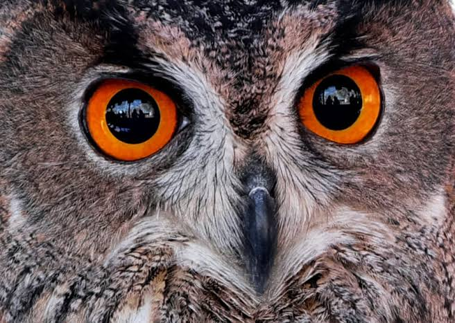
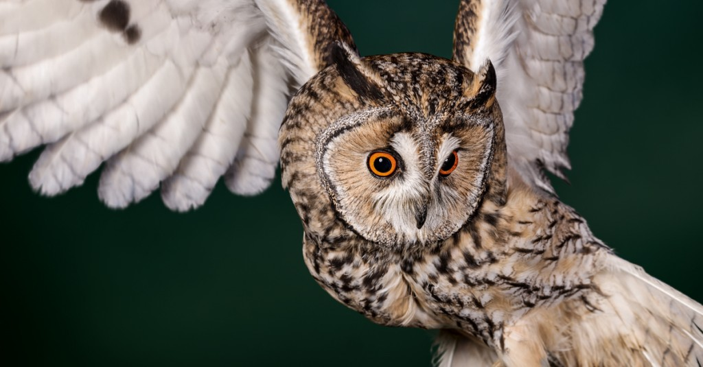
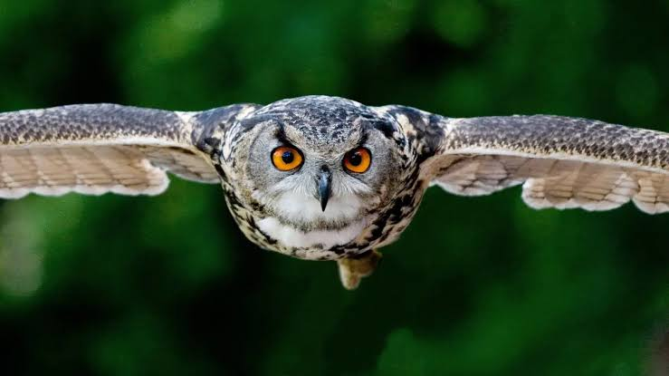

¿Qué son los búhos?
Los búhos son aves rapaces nocturnas que pertenecen al orden de los estrigiformes. Se caracterizan por su cabeza redonda, su pico curvo y sus grandes ojos orientados hacia el frente.
Son cazadores muy eficientes: se alimentan de roedores, insectos y otras aves pequeñas, por lo que ayudan a controlar plagas en el campo y las ciudades.
Viven en casi todo el mundo, excepto en la Antártida, y se adaptan a bosques, desiertos, montañas y zonas cercanas a poblados.

Ojos enormes
Sus ojos tienen gran sensibilidad a la luz y les permiten ver en la oscuridad.

Plumaje
Su plumaje les sirve de camuflaje con la corteza de los árboles.

Vuelo silencioso
Sus plumas tienen bordes suaves que reducen el ruido al volar.
Porque sus ojos están fijos en las cuencas, así que giran el cuello hasta unos 270 grados para mirar a su alrededor.
Principalmente ratones, ratas, insectos, peces y aves pequeñas, según la especie.